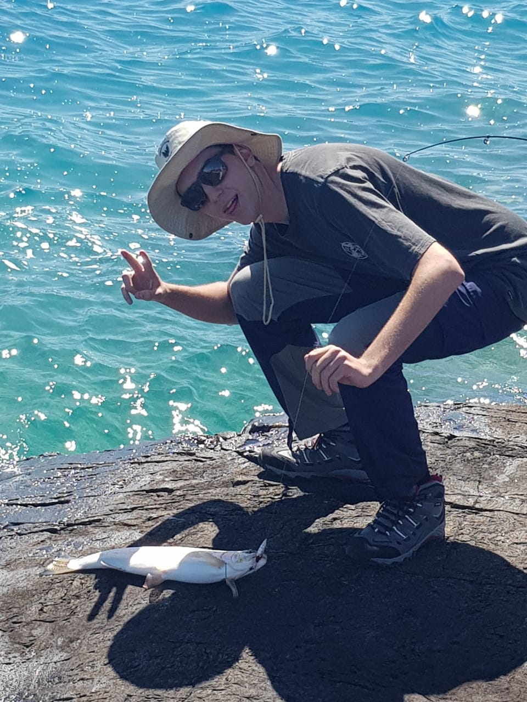
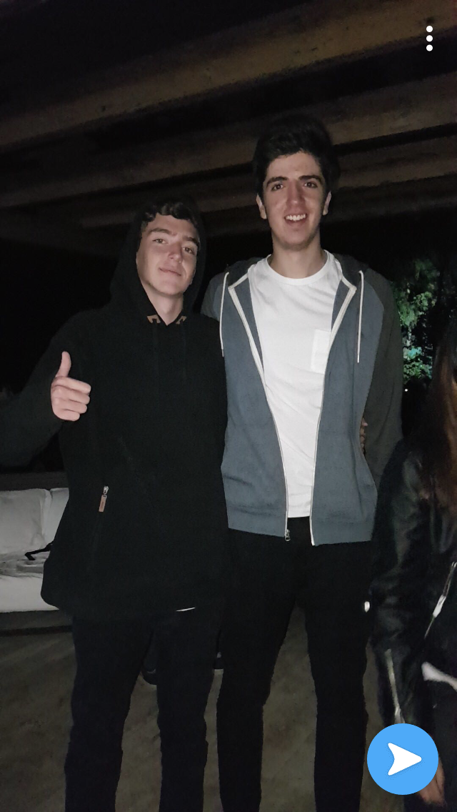
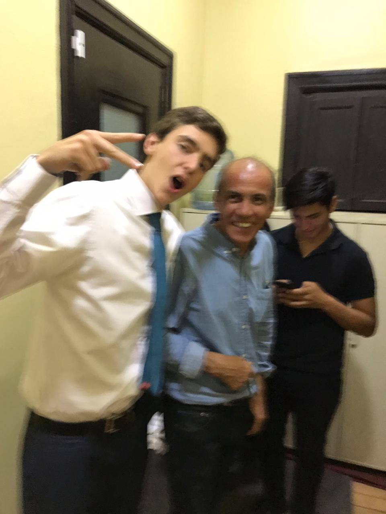
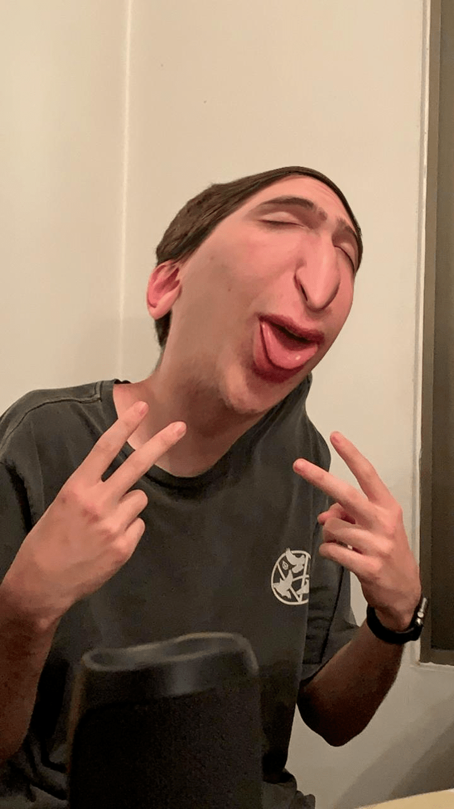

¿Quién Soy?
- ¿Quién Soy?
- Soy un joven de Santiago, tengo 19 años, me gustan los deportes y salir con mis amigos.
Sobre Mi
- Estudios terminados: Colegio Alemán de Santiago, egresado en 2019
- Estudios actuales: Ingeniería Civil UAI, estudiante 1er año.
- Edad: 19
- Certificados de Idiomas: Inglés, PET y FCE. Alemán, B1 y C1
Algunos Hobbies y Pasatiempos
Motocross


Este es uno de mis deportes preferidos, ya que lo practico desde muy joven. Me gusta mucho salir con mis amigos a andar en moto, a pesar de que a veces he terminado con lesiones feas por caídas.
Pesca


Pescar es algo que yo disfruto mucho hacer, porque es un deporte que se practica al aire libre, es muy calmado y para mí es muy relajante. El único problema es que no hay lagos buenos de pesca cerca de Santiago.
Carretear
  No se si salir a carretiar cuanta como Hobby, pero sin duda es algo que me gusta mucho hacer. Despúes de las largas semanas de estudio y de hacer trabajos para la universidad, es muy agradable salir a pasar tiempo de calidad con amigos y tomarse algún traguito.